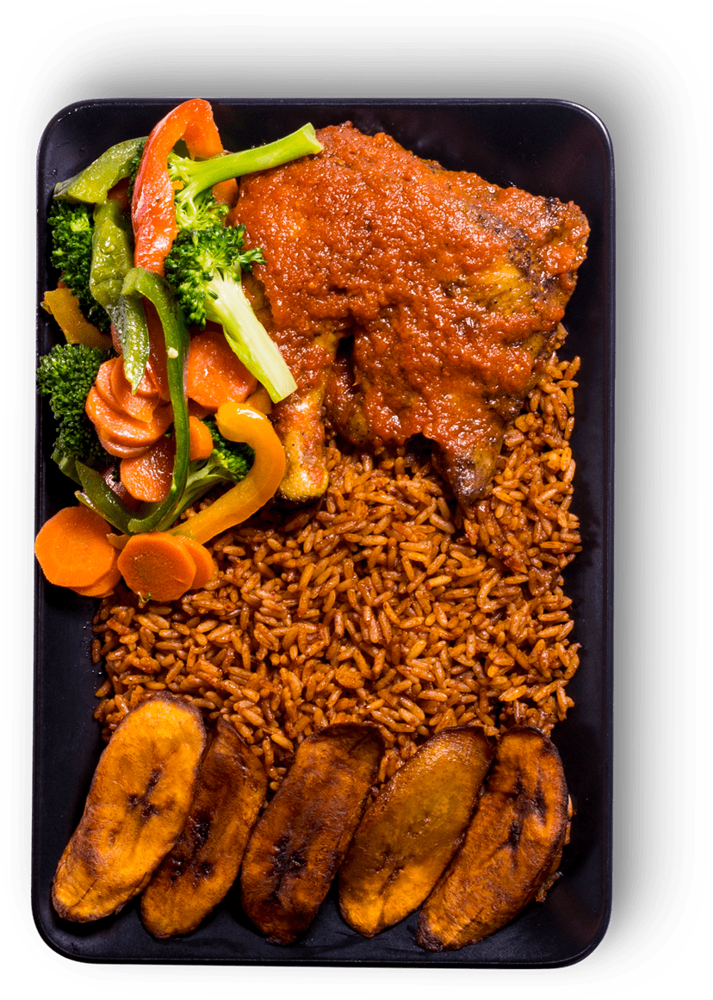

Jollof Rice

A delicious bowl of cooked jollof rice with plantains, sauced chicken and salad.
Description
Jollof rice is a popular West African dish made with rice, tomatoes, pepper onion, vegetables and spices. This dish is often served with fried plantains, grilled chicken, or salad, making it a versatile and beloved staple across many West African countries.
This recipe includes a step by step guide on how to cook a delicious pot of smokey jollof rice from the comfort of your home. Jollof rice is tasty and highly nutritious providing a source of protein, vitamins, fiber, calcium etc.
This recipe is for 4 servings.
Ingredients
- 4 cups of rice
- 800g of fresh tomatoes
- 1/2 cup of tomato paste
- 3 large onions
- 1 large red bell pepper
- 1 large yellow bell pepper
- 1 large green bell pepper
- 200g of scotch bonnet pepper(100g for people who dont want it too hot)
- 200g of fresh paprika (optional)
- Half bulb of a medium sized garlic
- 1 large fresh ginger
- 2 tsp of dried paprika
- 1 tbsp of curry and thyme
- Chicken or beef broth
- 2 cups of vegetable oil
- 7 pieces of bay leaf
- salt to taste
- 1 tbsp of white pepper
- 2 and half tbsp of powdered maggi of choice
- 2 tbsp of unmelted butter
- 1kg of cooked chicken, goat meat or any protein of choice
- 2 cups of mixed vegetables for salad
These are all the ingredients you need to make a rich, tasty and flavorful pot of smokey jollof rice for 4 big eaters!
Steps for cooking:
- Prepare the base:
- Wash, dice and set the base (fresh diced tomatoes, bell peppers, onions, peppers, ginger and garlic) in the oven tray.
- Preheat the oven for about 10 minutes at 200C.
- Grill the based for about 20 minutes or until edges are a little crusty.
- In a blender, combine the grilled base except 2 of the onion and blend until smooth. (Do not add water while blending).
- Set blended base aside in a bowl and blend the remaining 2 onions seperately.
- Prepare the rice:
- Wash and rice the rice under cold water multiple times, until the water runs clear. This will remove excess starch.
- Drain and set rice aside.
- Fry the tomato base in oil:
- In a large frying pan, fry the chicken or protein of choice until golden brown, and set aside.
- Heat your pot for about 10 seconds and pour the oil that was used to fry the protein into the pot and allow it to get hot.
- Reduce the heat to low heat, add the bay leafs and the thyme to hot oil and fry for 1 minute.
- Pour in the blended onion only, saute it for 8 minutes or until there is no liquid.
- Add the tomato paste in the frying onion and fry both together for 15 minutes until the tomatoe paste tastes sweet.
- Increase the heat to medium or high and pour in the blended tomato mixture and cook for 10-15 minutes, stirring occasionally,
until the sauce is reduced and the oil begins to separate from the mixture. (Add enough oil so the sauce can fry properly, you can reduce the oil after.).
- Season and allow sauce to cook:
- Add the paprika, curry powder, thyme, white pepper (if using), salt, and maggi to the sauce. Stir well to combine.
- Remove some sauce if sauce is too much or leave it if you like your jollof very "jollofy"
- Mix in the rice:
- Add the rinsed rice to the pot and stir to combine with the sauce. Ensure the rice is evenly coated with the sauce.
- Cover a little and allow to fry for 5 minutes in low heat.
- Add the Broth:
- Pour in the Broth and mix gently.
- Make sure the heat is set to low.
- Cook the Jollof rice:
- Cover and seal the pot tighly with alluminium foil and let it cook in low heat for about 10 minutes intervals,
add little water at intervals depending on how soft you want the grains to be, add some sliced onion at third interval.
- Rice should be fully cooked after third interval. (At each interval, avoid opening the lid for too long so the steam will not escape too quickly).
- Once the rice is tender and fully cooked, remove from heat. Add the butter (if using), and fluff the rice with a fork.
- Serve:
- Serve the Jollof Rice hot with your choice of side dishes like fried plantains, fried chicken, or salad.
Enjoy your delicious homemade Smokey Jollof Rice!